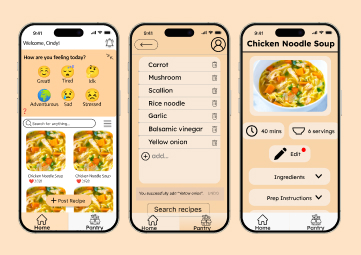
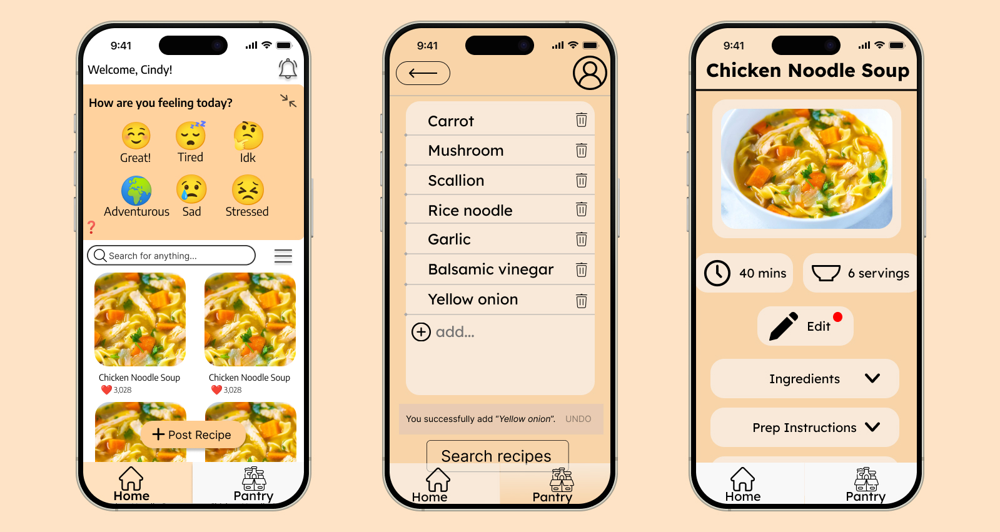
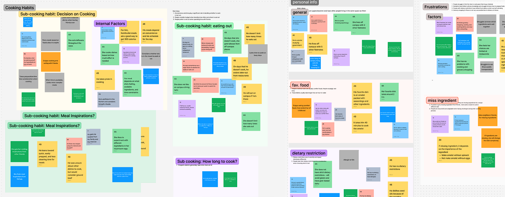

Designer
August 2023 - December 2023
FigJam/Figma
SueChef is an app prototype designed for busy Cornell University students who need personalized cooking assistance. Its features include recommending recipes based on your mood, generating recipes based on scanned ingredients, and modifying recipes based on your preferences. You can try out the prototype below!

Various screens from the prototype. Click on the image to interact with the prototype.
This app prototype was a semester-long project that I worked on with 4 other designers for a course, Human-Computer Interaction Design, at Cornell University. The goal of this project was to identify a pain point of a community of our choice and to devise a solution for it. During the project’s duration, we employed various methods, such as conducting contextual interviews and creating paper prototypes, to better understand our users and improve our prototype.
As many Cornell University students move to off-campus housing after their first year, they may struggle to find food from nearby eateries that accommodate their dietary restrictions. Combined with their busy school life, these students will have a hard time finding the perfect recipe that accommodates both their time and dietary restrictions. Our project aims to address these pain points by providing personalized cooking assistance that incorporates the user’s lifestyle and preferences.
To better understand the needs of our target audience, Cornell University students living off-campus, we each conducted contextual interviews. We first developed an interview script to be used in each session, then contacted members of our target group. During each interview, two team members participated - one interviewed the participant while the other took notes on their laptop. Each interview lasted 30 minutes and was conducted in the participant’s kitchen.
Afterwards, we gathered everyone’s notes from the interviews and created an affinity diagram using FigJam.

A cropped view of our affinity diagram. Click on the image to view the full diagram.
We organized our notes into four main clusters: cooking habits, personal information, frustrations, and grocery shopping. With an organized view of our target audience’s lifestyle and complaints, we were able to extract the following insights:
These insights not only supported our problem statement, but also introduced new ideas to consider in our prototype, such as people cooking based on their mood and their want for healthy foods.
To best address these insights, we created a persona that embodies them.
Meet Cindy!
Cindy is a 21-year-old college student attending Cornell University. She:
With a user persona in mind, we turned to designing. Before anything else, we researched the existing solution space to avoid making something that already exists. We found that although there were plenty of digital and physical solutions, none of them were a phone app that could record the user’s mood and allow for recipe modification. From there, we brainstormed a few more tasks that the user should be able to complete through our app. We came up with a total of five tasks: